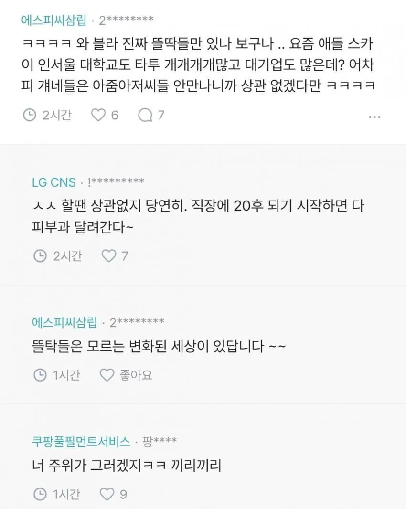
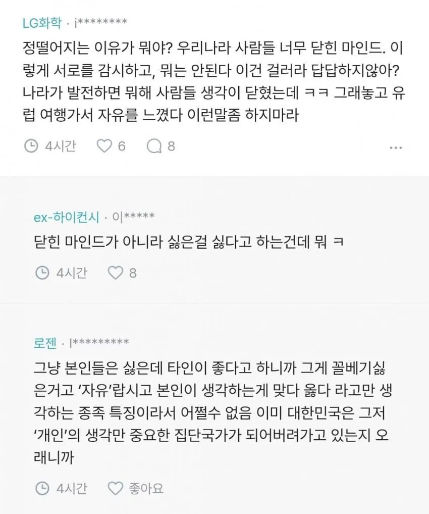
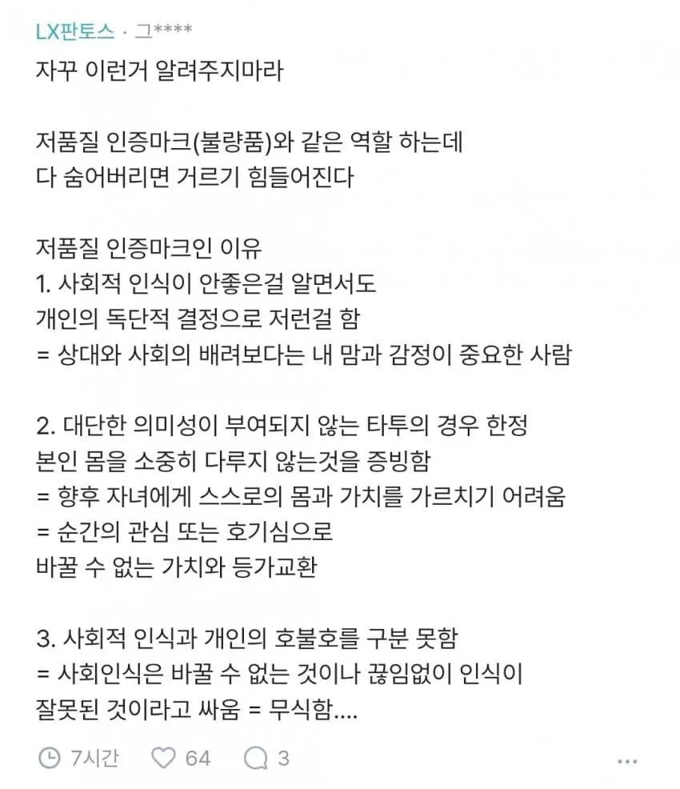

문신 있는데 그거 속에 못채우고 덜렁 있으면 그거도 존나 웃김 ㅋㅋㅋㅋㅋㅋ
타투를 선호하는 사람이 있으면 비선호하는 사람도 있기 마련이지
원래 문신은 범죄자나 노예나 했다
편안하게 거르면된다
안한사람도 많은데 굳이ㅋ
걸창 같긴해
본인이 문신안했으면 상대방도 문신안한 사람 원하는게 딩연한거 아닌가.
고양이 두마리 이상은 특히 100%..
문신 대부분이 동물키우다가 유기함
자기 만족을 위해서 동물을 이용하는거임
유기동물 매년 10만마리 나오는 이유가 있음
잠재적 동물유기범들임
내가 문신 안 했으니 안 한 사람 원한다는데 왜 그래
한 사람도 한 사람 만나면 되잖아
자기 문신 한 거만 이해받고 싶으면 싫어하는 것도 이해해줘야지
지는 좋아한다고 마음대로 해놓고
남이 본인 좋아하는거 마음대로 한다는걸 왜 지랄하는거지? ㅋㅋ
문신 한 사람은 조용히 멀리하긴 하는데
문신한 줄 모르고 지내다가 괜찮은 사이가 되면 그냥 그런갑다 함
애초에 옷을 입은 상태에서 보일 정도로 문신을 한 사람이면... 외향적이고 뭔가 사회성이 좋아보여서 무서움.
머리빠질때 충동적으로 두피 문신 했는데 ㅜㅜ 근데 약먹으니까 다시 남 ㅠㅠ
문신 지우는 유툽 요새 한참 보다가 문신 알고리즘 탔는데
난 원래 패션문신 편견 없었는데 생김
오히려 이레즈미 문신사들은 직업다워보였음
난 자그마한건 ㄱㅊ고 이레즈미나 손바닥 크기 넘어가는거부터는 ㅂㄹ
그래서 고 가 뭔데? 고추임?
고양이
문담피고아
문신, 담배, 피어싱, 고양이, 아이폰
싫다는데 왜 자꾸 좋아하라고 그래
피부 탱탱할때나 이쁘지 50 60 먹고도 이쁠까?
목욕탕에서 문신할배 할매보고 판단해라 ㅋ
볼때마다 음지에서 좀 놀았나? 생각만든다